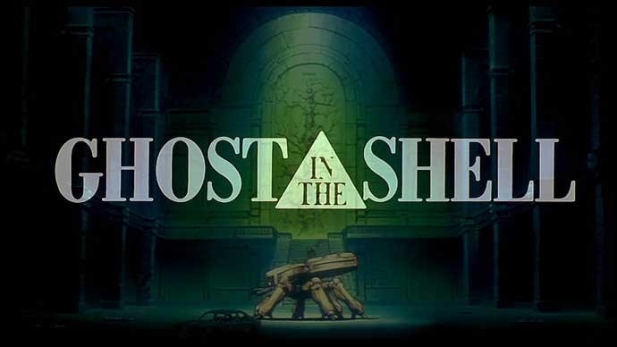

Ghost in the Shell es un manga de ciencia ficción creado por Masamune Shirow , que progresó en dos mangas más titulados: Ghost in the Shell 2: Man/Machine Interface y Ghost in the Shell 1.5: Human-Error Processor; se produjeron dos películas animadas dirigidas por Mamoru Oshii: Ghost in the Shell y Ghost in the Shell 2.
